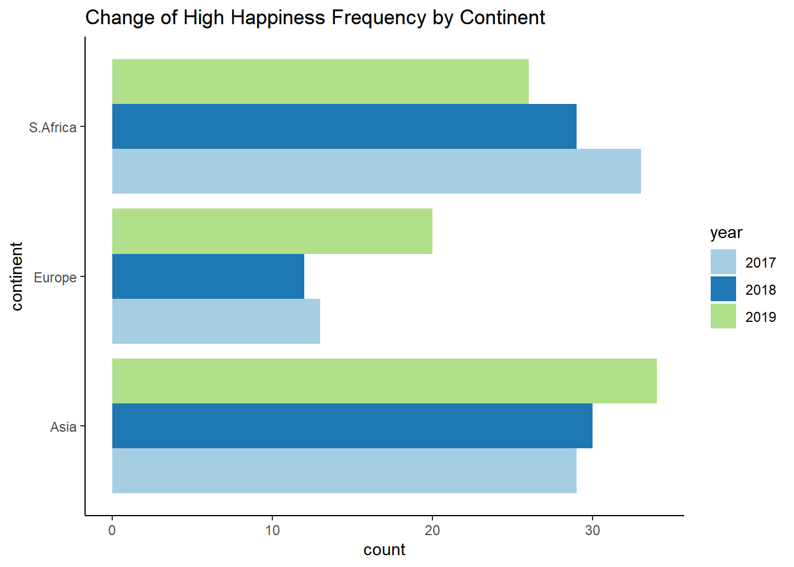
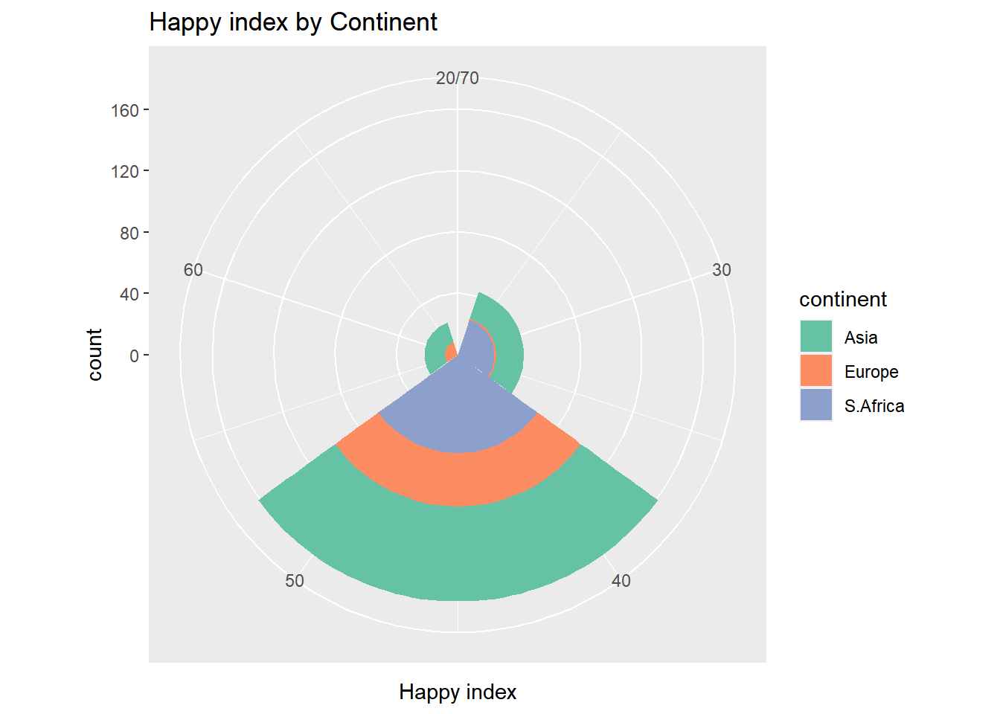

### assignment 5
library(ggplot2)
library(tidyverse)── Attaching packages ─────────────────────────────────────── tidyverse 1.3.2 ──
✔ tibble 3.1.8 ✔ dplyr 1.0.10
✔ tidyr 1.2.1 ✔ stringr 1.4.1
✔ readr 2.1.2 ✔ forcats 0.5.2
✔ purrr 0.3.4
── Conflicts ────────────────────────────────────────── tidyverse_conflicts() ──
✖ dplyr::filter() masks stats::filter()
✖ dplyr::lag() masks stats::lag()library(RColorBrewer)
hpi <- read.csv("hpi_count.csv")
colnames(hpi) <- c("hpi", "gdp", "continent", "year")
hpi <- hpi %>% mutate(year = as.character(year))
p1 <- ggplot(hpi,
aes(x = continent,
group = year,
fill = year))+
scale_fill_brewer(palette = "Paired") +
geom_bar(position='dodge') +
coord_flip() +
labs(title = "Change of High Happiness Frequency by Continent") +
theme_classic()
p1
p2 <- ggplot(hpi,
aes(x = year,
group = continent,
fill = continent))+
scale_fill_manual(breaks = c("Asia", "Europe", "S.Africa"),
values = c("lightgreen", "lightblue", "orange")) +
geom_bar(position='stack') +
labs(title = "Continents with high happiness index by year") +
theme_classic()
p2
p3 <- ggplot(hpi, aes(x = hpi, fill = continent)) +
geom_histogram(binwidth = 15, boundary = -7.5) +
coord_polar() +
scale_x_continuous(limits = c(20, 70)) +
scale_fill_brewer(palette = "Set2") +
xlab("Happy index")+
labs(title = "Happy index by Continent")
p3Warning: Removed 6 rows containing missing values (geom_bar).